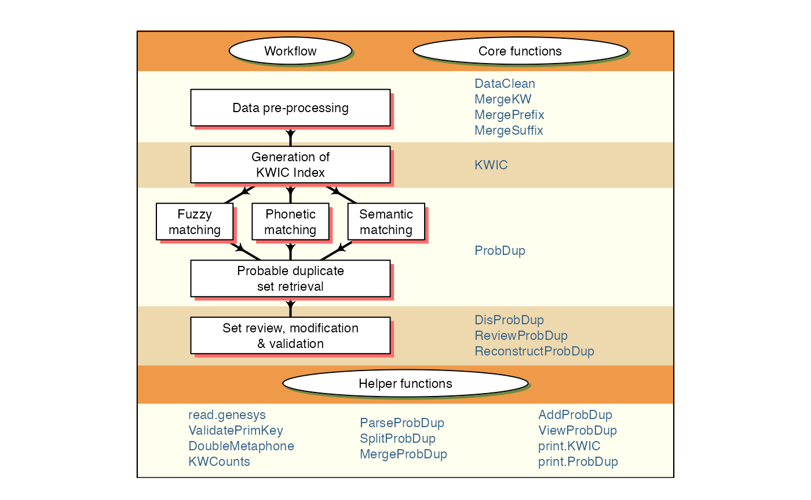
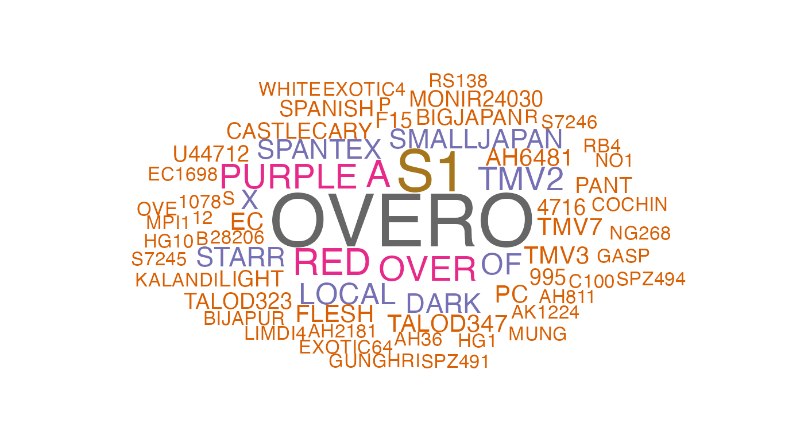
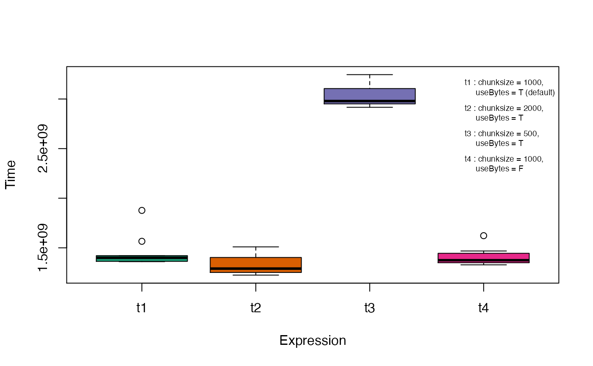
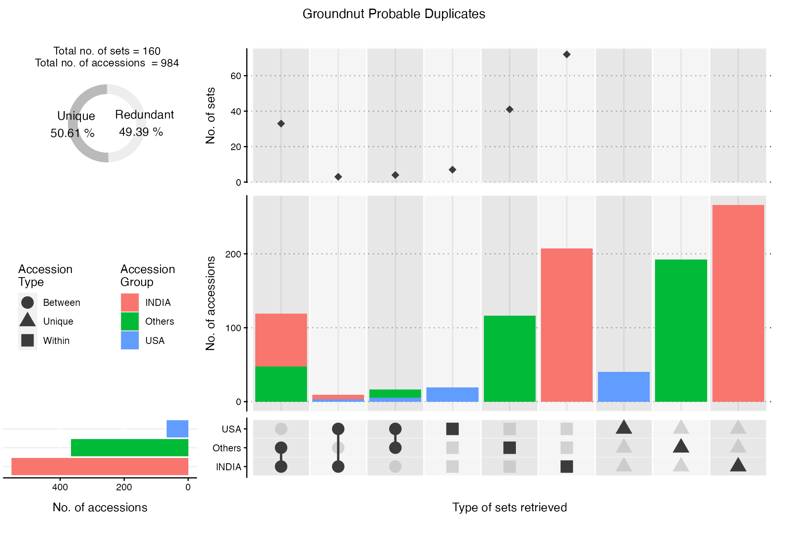

An Introduction to PGRdup Package
Aravind, J.1, Radhamani, J.1, Kalyani Srinivasan1, Ananda Subhash, B.2, and Tyagi, R. K.1
2021-03-02
Source:vignettes/Introduction.Rmd
Introduction.Rmd
- ICAR-National Bureau of Plant Genetic Resources, New Delhi, India.
- Centre for Development of Advanced Computing, Thiruvananthapuram, Kerala, India.

Introduction
PGRdup is an R package to facilitate the search for probable/possible duplicate accessions in Plant Genetic Resources (PGR) collections using passport databases. Primarily this package implements a workflow (Fig. 1) designed to fetch groups or sets of germplasm accessions with similar passport data particularly in fields associated with accession names within or across PGR passport databases. It offers a suite of functions for data pre-processing, creation of a searchable Key Word in Context (KWIC) index of keywords associated with accession records and the identification of probable duplicate sets by fuzzy, phonetic and semantic matching of keywords. It also has functions to enable the user to review, modify and validate the probable duplicate sets retrieved.
The goal of this document is to introduce the users to these functions and familiarise them with the workflow intended to fetch probable duplicate sets. This document assumes a basic knowledge of R programming language.
The functions in this package are primarily built using the R packages data.table, igraph, stringdist and stringi.


Fig. 1. PGRdup workflow and associated functions
Version History
The current version of the package is 0.2.3.7.9000. The previous versions are as follows.
Table 1. Version history of PGRdup R package.
| Version | Date |
|---|---|
| 0.2 | 2015-04-14 |
| 0.2.1 | 2015-07-23 |
| 0.2.2 | 2016-03-05 |
| 0.2.2.1 | 2016-03-09 |
| 0.2.3 | 2017-02-01 |
| 0.2.3.1 | 2017-03-15 |
| 0.2.3.2 | 2017-08-05 |
| 0.2.3.3 | 2018-01-13 |
| 0.2.3.4 | 2019-09-19 |
| 0.2.3.5 | 2020-02-10 |
| 0.2.3.6 | 2020-07-27 |
To know detailed history of changes use news(package='PGRdup').
Installation
The package can be installed using the following functions:
# Install from CRAN
install.packages('PGRdup', dependencies=TRUE)Uninstalled dependencies (packages which PGRdup depends on viz- data.table, igraph, stringdist and stringi are also installed because of the argument dependencies=TRUE.
Then the package can be loaded using the function
Data Format
The package is essentially designed to operate on PGR passport data present in a data frame object, with each row holding one record and columns representing the attribute fields. For example, consider the dataset GN1000 supplied along with the package.
--------------------------------------------------------------------------------
Welcome to PGRdup version 0.2.3.7.9000
# To know how to use this package type:
browseVignettes(package = 'PGRdup')
for the package vignette.
# To know whats new in this version type:
news(package='PGRdup')
for the NEWS file.
# To cite the methods in the package type:
citation(package='PGRdup')
# To suppress this message use:
suppressPackageStartupMessages(library(PGRdup))
--------------------------------------------------------------------------------[1] "data.frame"
# View the first few records in the data frame
head(GN1000) CommonName BotanicalName NationalID CollNo DonorID
1 Groundnut Arachis hypogaea EC100277 Shulamith/ NRCG-14555 ICG-4709
2 Groundnut Arachis hypogaea EC100280 NC ICG5288
3 Groundnut Arachis hypogaea EC100281 MALIMBA ICG5289
4 Groundnut Arachis hypogaea EC100713 EC 100713; ICG5296
5 Groundnut Arachis hypogaea EC100715 EC 100715 ICG5298
6 Groundnut Arachis hypogaea EC100716 ICG-3150
OtherID1 OtherID2 BioStatus SourceCountry TransferYear
1 U4-47-12 Landrace Israel 2014
2 NCS NC 5 Landrace United States of America 2004
3 EC 100281 Landrace Malawi 2004
4 STARR Landrace United States of America 2004
5 COMET Landrace United States of America 2004
6 ARGENTINE Landrace United States of America 2014If the passport data exists as an excel sheet, it can be first converted to a comma-separated values (csv) file or tab delimited file and then easily imported into the R environment using the base functions read.csv and read.table respectively. Similarly read_csv() and read_tsv() from the readr package can also be used. Alternatively, the package readxl can be used to directly read the data from excel. In case of large csv files, the function fread in the data.table package can be used to rapidly load the data.
If the PGR passport data is in a database management system (DBMS), the required table can be imported as a data frame into R. using the appropriate R-database interface package. For example dbConnect for MySQL, ROracle for Oracle etc.
The PGR data downloaded from the genesys database as a Darwin Core - Germplasm zip archive can be imported into the R environment as a flat file data.frame using the read.genesys function.
# Import the DwC-Germplasm zip archive "genesys-accessions-filtered.zip"
PGRgenesys <- read.genesys("genesys-accessions-filtered.zip",
scrub.names.space = TRUE, readme = TRUE)Data Pre-processing
Data pre-processing is a critical step which can affect the quality of the probable duplicate sets being retrieved. It involves data standardization as well as data cleaning which can be achieved using the functions DataClean, MergeKW, MergePrefix and MergeSuffix.
DataClean function can be used to clean the character strings in passport data fields(columns) specified as the input character vector x according to the conditions specified in the arguments.
Commas, semicolons and colons which are sometimes used to separate multiple strings or names within the same field can be replaced with a single space using the logical arguments fix.comma, fix.semcol and fix.col respectively.
x <- c("A 14; EC 1697", "U 4-4-28; EC 21078; A 32", "PI 262801:CIAT 9075:GKP 9553/90",
"NCAC 16049, PI 261987, RCM 493-3")
x[1] "A 14; EC 1697" "U 4-4-28; EC 21078; A 32"
[3] "PI 262801:CIAT 9075:GKP 9553/90" "NCAC 16049, PI 261987, RCM 493-3"
# Replace ',', ':' and ';' with space
DataClean(x, fix.comma=TRUE, fix.semcol=TRUE, fix.col=TRUE,
fix.bracket=FALSE, fix.punct=FALSE, fix.space=FALSE, fix.sep=FALSE,
fix.leadzero=FALSE)[1] "A 14 EC 1697" "U 4-4-28 EC 21078 A 32"
[3] "PI 262801 CIAT 9075 GKP 9553/90" "NCAC 16049 PI 261987 RCM 493-3"Similarly the logical argument fix.bracket can be used to replace all brackets including parenthesis, square brackets and curly brackets with space.
x <- c("(NRCG-1738)/(NFG649)", "26-5-1[NRCG-2528]", "Ah 1182 {NRCG-4340}")
x[1] "(NRCG-1738)/(NFG649)" "26-5-1[NRCG-2528]" "Ah 1182 {NRCG-4340}"
# Replace parenthesis, square brackets and curly brackets with space
DataClean(x, fix.comma=FALSE, fix.semcol=FALSE, fix.col=FALSE,
fix.bracket=TRUE,
fix.punct=FALSE, fix.space=FALSE, fix.sep=FALSE, fix.leadzero=FALSE)[1] "NRCG-1738 / NFG649" "26-5-1 NRCG-2528" "AH 1182 NRCG-4340"The logical argument fix.punct can be used to remove all punctuation from the data.
x <- c("#26-6-3-1", "Culture No. 857", "U/4/47/13")
x[1] "#26-6-3-1" "Culture No. 857" "U/4/47/13"
# Remove punctuation
DataClean(x, fix.comma=FALSE, fix.semcol=FALSE, fix.col=FALSE, fix.bracket=FALSE,
fix.punct=TRUE,
fix.space=FALSE, fix.sep=FALSE, fix.leadzero=FALSE)[1] "26631" "CULTURE NO 857" "U44713" fix.space can be used to convert all space characters such as tab, newline, vertical tab, form feed and carriage return to spaces and finally convert multiple spaces to single space.
x <- c("RS 1", "GKSPScGb 208 PI 475855")
x[1] "RS 1" "GKSPScGb 208 PI 475855"
# Replace all space characters to space and convert multiple spaces to single space
DataClean(x, fix.comma=FALSE, fix.semcol=FALSE, fix.col=FALSE,
fix.bracket=FALSE, fix.punct=FALSE,
fix.space=TRUE,
fix.sep=FALSE, fix.leadzero=FALSE)[1] "RS 1" "GKSPSCGB 208 PI 475855"fix.sep can be used to merge together accession identifiers composed of alphabetic characters separated from a series of digits by a space character.
x <- c("NCAC 18078", "AH 6481", "ICG 2791")
x[1] "NCAC 18078" "AH 6481" "ICG 2791"
# Merge alphabetic character separated from a series of digits by a space
DataClean(x, fix.comma=FALSE, fix.semcol=FALSE, fix.col=FALSE,
fix.bracket=FALSE, fix.punct=FALSE, fix.space=FALSE,
fix.sep=TRUE,
fix.leadzero=FALSE)[1] "NCAC18078" "AH6481" "ICG2791" fix.leadzero can be used to remove leading zeros from accession name fields to facilitate matching to identify probable duplicates.
x <- c("EC 0016664", "EC0001690")
x[1] "EC 0016664" "EC0001690"
# Remove leading zeros
DataClean(x, fix.comma=FALSE, fix.semcol=FALSE, fix.col=FALSE,
fix.bracket=FALSE, fix.punct=FALSE, fix.space=FALSE, fix.sep=FALSE,
fix.leadzero=TRUE)[1] "EC 16664" "EC1690" This function can hence be made use of in tidying up multiple forms of messy data existing in fields associated with accession names in PGR passport databases (Table 1).
names <- c("S7-12-6", "ICG-3505", "U 4-47-18;EC 21127", "AH 6481", "RS 1",
"AK 12-24", "2-5 (NRCG-4053)", "T78, Mwitunde", "ICG 3410",
"#648-4 (Gwalior)", "TG4;U/4/47/13", "EC0021003")
names [1] "S7-12-6" "ICG-3505" "U 4-47-18;EC 21127"
[4] "AH 6481" "RS 1" "AK 12-24"
[7] "2-5 (NRCG-4053)" "T78, Mwitunde" "ICG 3410"
[10] "#648-4 (Gwalior)" "TG4;U/4/47/13" "EC0021003"
# Clean the data
DataClean(names) [1] "S7126" "ICG3505" "U44718 EC21127" "AH6481"
[5] "RS1" "AK1224" "25 NRCG4053" "T78 MWITUNDE"
[9] "ICG3410" "6484 GWALIOR" "TG4 U44713" "EC21003" Table 2. Data pre-processing using DataClean.
| names | DataClean(names) |
|---|---|
| S7-12-6 | S7126 |
| ICG-3505 | ICG3505 |
| U 4-47-18;EC 21127 | U44718 EC21127 |
| AH 6481 | AH6481 |
| RS 1 | RS1 |
| AK 12-24 | AK1224 |
| 2-5 (NRCG-4053) | 25 NRCG4053 |
| T78, Mwitunde | T78 MWITUNDE |
| ICG 3410 | ICG3410 |
| #648-4 (Gwalior) | 6484 GWALIOR |
| TG4;U/4/47/13 | TG4 U44713 |
| EC0021003 | EC21003 |
Several common keyword string pairs or keyword prefixes and suffixes exist in fields associated with accession names in PGR passport databases. They can be merged using the functions MergeKW, MergePrefix and MergeSuffix respectively. The keyword string pairs, prefixes and suffixes can be supplied as a list or a vector to the argument y in these functions.
names <- c("Punjab Bold", "Gujarat- Dwarf", "Nagpur.local", "SAM COL 144",
"SAM COL--280", "NIZAMABAD-LOCAL", "Dark Green Mutant",
"Dixie-Giant", "Georgia- Bunch", "Uganda-erect", "Small Japan",
"Castle Cary", "Punjab erect", "Improved small japan",
"Dark Purple")
names [1] "Punjab Bold" "Gujarat- Dwarf" "Nagpur.local"
[4] "SAM COL 144" "SAM COL--280" "NIZAMABAD-LOCAL"
[7] "Dark Green Mutant" "Dixie-Giant" "Georgia- Bunch"
[10] "Uganda-erect" "Small Japan" "Castle Cary"
[13] "Punjab erect" "Improved small japan" "Dark Purple"
# Merge pairs of strings
y1 <- list(c("Gujarat", "Dwarf"), c("Castle", "Cary"), c("Small", "Japan"),
c("Big", "Japan"), c("Mani", "Blanco"), c("Uganda", "Erect"),
c("Mota", "Company"))
names <- MergeKW(names, y1, delim = c("space", "dash", "period"))
# Merge prefix strings
y2 <- c("Light", "Small", "Improved", "Punjab", "SAM", "Dark")
names <- MergePrefix(names, y2, delim = c("space", "dash", "period"))
# Merge suffix strings
y3 <- c("Local", "Bold", "Cary", "Mutant", "Runner", "Giant", "No.",
"Bunch", "Peanut")
names <- MergeSuffix(names, y3, delim = c("space", "dash", "period"))
names [1] "PunjabBold" "GujaratDwarf" "Nagpurlocal"
[4] "SAMCOL 144" "SAMCOL--280" "NIZAMABADLOCAL"
[7] "DarkGreenMutant" "DixieGiant" "GeorgiaBunch"
[10] "Ugandaerect" "SmallJapan" "CastleCary"
[13] "Punjaberect" "Improvedsmalljapan" "DarkPurple" These functions can be applied over multiple columns(fields) in a data frame using the lapply function.
# Load example dataset
GN <- GN1000
# Specify as a vector the database fields to be used
GNfields <- c("NationalID", "CollNo", "DonorID", "OtherID1", "OtherID2")
head(GN[GNfields]) NationalID CollNo DonorID OtherID1 OtherID2
1 EC100277 Shulamith/ NRCG-14555 ICG-4709 U4-47-12
2 EC100280 NC ICG5288 NCS NC 5
3 EC100281 MALIMBA ICG5289 EC 100281
4 EC100713 EC 100713; ICG5296 STARR
5 EC100715 EC 100715 ICG5298 COMET
6 EC100716 ICG-3150 ARGENTINE
# Clean the data
GN[GNfields] <- lapply(GN[GNfields], function(x) DataClean(x))
y1 <- list(c("Gujarat", "Dwarf"), c("Castle", "Cary"), c("Small", "Japan"),
c("Big", "Japan"), c("Mani", "Blanco"), c("Uganda", "Erect"),
c("Mota", "Company"))
y2 <- c("Dark", "Light", "Small", "Improved", "Punjab", "SAM")
y3 <- c("Local", "Bold", "Cary", "Mutant", "Runner", "Giant", "No.",
"Bunch", "Peanut")
GN[GNfields] <- lapply(GN[GNfields],
function(x) MergeKW(x, y1, delim = c("space", "dash")))
GN[GNfields] <- lapply(GN[GNfields],
function(x) MergePrefix(x, y2, delim = c("space", "dash")))
GN[GNfields] <- lapply(GN[GNfields],
function(x) MergeSuffix(x, y3, delim = c("space", "dash")))
head(GN[GNfields]) NationalID CollNo DonorID OtherID1 OtherID2
1 EC100277 SHULAMITH NRCG14555 ICG4709 U44712
2 EC100280 NC ICG5288 NCS NC5
3 EC100281 MALIMBA ICG5289 EC100281
4 EC100713 EC100713 ICG5296 STARR
5 EC100715 EC100715 ICG5298 COMET
6 EC100716 ICG3150 ARGENTINEGeneration of KWIC Index
The function KWIC generates a Key Word in Context index (Knüpffer 1988; Knüpffer, Frese, and Jongen 1997) from the data frame of a PGR passport database based on the fields(columns) specified in the argument fields along with the keyword frequencies and gives the output as a list of class KWIC. The first element of the vector specified in fields is considered as the primary key or identifier which uniquely identifies all rows in the data frame.
This function fetches keywords from different fields specified, which can be subsequently used for matching to identify probable duplicates. The frequencies of the keywords retrieved can help in determining if further data pre-processing is required and also to decide whether any common keywords can be exempted from matching (Fig. 2).
# Load example dataset
GN <- GN1000
# Specify as a vector the database fields to be used
GNfields <- c("NationalID", "CollNo", "DonorID", "OtherID1", "OtherID2")
# Clean the data
GN[GNfields] <- lapply(GN[GNfields], function(x) DataClean(x))
y1 <- list(c("Gujarat", "Dwarf"), c("Castle", "Cary"), c("Small", "Japan"),
c("Big", "Japan"), c("Mani", "Blanco"), c("Uganda", "Erect"),
c("Mota", "Company"))
y2 <- c("Dark", "Light", "Small", "Improved", "Punjab", "SAM")
y3 <- c("Local", "Bold", "Cary", "Mutant", "Runner", "Giant", "No.",
"Bunch", "Peanut")
GN[GNfields] <- lapply(GN[GNfields],
function(x) MergeKW(x, y1, delim = c("space", "dash")))
GN[GNfields] <- lapply(GN[GNfields],
function(x) MergePrefix(x, y2, delim = c("space", "dash")))
GN[GNfields] <- lapply(GN[GNfields],
function(x) MergeSuffix(x, y3, delim = c("space", "dash")))
# Generate the KWIC index
GNKWIC <- KWIC(GN, GNfields, min.freq = 1)
class(GNKWIC)[1] "KWIC"
GNKWICKWIC fields : NationalID CollNo DonorID OtherID1 OtherID2
Number of keywords : 3893
Number of distinct keywords : 3109
# Retrieve the KWIC index from the KWIC object
KWIC <- GNKWIC[[1]]
KWIC <- KWIC[order(KWIC$KEYWORD, decreasing = TRUE),]
head(KWIC[,c("PRIM_ID", "KWIC_L", "KWIC_KW", "KWIC_R")], n = 10) PRIM_ID KWIC_L KWIC_KW
550 EC490380 EC490380 = = ICG1122 = = LIN YUCH
435 EC36893 EC36893 = YUAN
434 EC36893 EC36893 = YUAN YOUNG
1287 EC613524 EC613524 = NRCG9225 = = PEI KANGPE YOUDON
1703 IC113088 IC113088 = = = SB XI
1741 IC296965 IC296965 = SB X11 X V11 = ICG1769 = = SB XI
3385 IC445197 IC445197 = X144B28
3483 IC494754 IC494754 = = ICG7686 = = X144B28
2090 IC304018 IC304018 = 144B19B NRCG = ICG1561 = = X144B19B
1735 IC296965 IC296965 = SB X11
KWIC_R
550 TSAO
435 YOUNG TOU = ICG5241 = = EC36893
434 TOU = ICG5241 = = EC36893
1287 =
1703 = IC305003
1741 X VII
3385 B = ICG2113 = = LIMDI4
3483 B
2090
1735 X V11 = ICG1769 = = SB XI X VII
# Retrieve the keyword frequencies from the KWIC object
KeywordFreq <- GNKWIC[[2]]
head(KeywordFreq) Keyword Freq
1 OVERO 25
2 S1 19
3 A 11
4 RED 11
5 OVER 10
6 PURPLE 10
Fig. 2. Word cloud of keywords retrieved
The function will throw an error in case of duplicates or NULL values in the primary key/ID field mentioned.
GN <- GN1000
GN[GNfields] <- lapply(GN[GNfields], function(x) DataClean(x))
# Generate dummy duplicates for illustration
GN[1001:1005,] <- GN[1:5,]
# Generate dummy NULL values for illustration
GN[1001,3] <- ""
GN[1002,3] <- ""
GN[1001:1005,] CommonName BotanicalName NationalID CollNo DonorID
1001 Groundnut Arachis hypogaea SHULAMITH NRCG14555 ICG4709
1002 Groundnut Arachis hypogaea NC ICG5288
1003 Groundnut Arachis hypogaea EC100281 MALIMBA ICG5289
1004 Groundnut Arachis hypogaea EC100713 EC100713 ICG5296
1005 Groundnut Arachis hypogaea EC100715 EC100715 ICG5298
OtherID1 OtherID2 BioStatus SourceCountry TransferYear
1001 U44712 Landrace Israel 2014
1002 NCS NC5 Landrace United States of America 2004
1003 EC100281 Landrace Malawi 2004
1004 STARR Landrace United States of America 2004
1005 COMET Landrace United States of America 2004
GNKWIC <- KWIC(GN, GNfields, min.freq=1)Error in KWIC(GN, GNfields, min.freq = 1) :
Primary key/ID field should be unique and not NULL
Use PGRdup::ValidatePrimKey() to identify and rectify the aberrant records firstThe erroneous records can be identified using the helper function ValidatePrimKey.
# Validate the primary key/ID field for duplication or existence of NULL values
ValidatePrimKey(x = GN, prim.key = "NationalID")$message1
[1] "ERROR: Duplicated records found in prim.key field"
$Duplicates
CommonName BotanicalName NationalID CollNo DonorID
1001 Groundnut Arachis hypogaea SHULAMITH NRCG14555 ICG4709
1002 Groundnut Arachis hypogaea NC ICG5288
3 Groundnut Arachis hypogaea EC100281 MALIMBA ICG5289
1003 Groundnut Arachis hypogaea EC100281 MALIMBA ICG5289
4 Groundnut Arachis hypogaea EC100713 EC100713 ICG5296
1004 Groundnut Arachis hypogaea EC100713 EC100713 ICG5296
5 Groundnut Arachis hypogaea EC100715 EC100715 ICG5298
1005 Groundnut Arachis hypogaea EC100715 EC100715 ICG5298
OtherID1 OtherID2 BioStatus SourceCountry TransferYear
1001 U44712 Landrace Israel 2014
1002 NCS NC5 Landrace United States of America 2004
3 EC100281 Landrace Malawi 2004
1003 EC100281 Landrace Malawi 2004
4 STARR Landrace United States of America 2004
1004 STARR Landrace United States of America 2004
5 COMET Landrace United States of America 2004
1005 COMET Landrace United States of America 2004
$message2
[1] "ERROR: NULL records found in prim.key field"
$NullRecords
CommonName BotanicalName NationalID CollNo DonorID
1001 Groundnut Arachis hypogaea SHULAMITH NRCG14555 ICG4709
1002 Groundnut Arachis hypogaea NC ICG5288
OtherID1 OtherID2 BioStatus SourceCountry TransferYear primdup
1001 U44712 Landrace Israel 2014 TRUE
1002 NCS NC5 Landrace United States of America 2004 TRUE
# Remove the offending records
GN <- GN[-c(1001:1005), ]
# Validate again
ValidatePrimKey(x = GN, prim.key = "NationalID")$message1
[1] "OK: No duplicated records found in prim.key field"
$Duplicates
NULL
$message2
[1] "OK: No NULL records found in prim.key field"
$NullRecords
NULLRetrieval of Probable Duplicate Sets
Once KWIC indexes are generated, probable duplicates of germplasm accessions can be identified by fuzzy, phonetic and semantic matching of the associated keywords using the function ProbDup. The sets are retrieved as a list of data frames of class ProbDup.
Keywords that are not to be used for matching can be specified as a vector in the excep argument.
Methods
The function can execute matching according to either one of the following three methods as specified by the method argument.
-
Method
"a": Performs string matching of keywords in a single KWIC index to identify probable duplicates of accessions in a single PGR passport database.
# Load example dataset
GN <- GN1000
# Specify as a vector the database fields to be used
GNfields <- c("NationalID", "CollNo", "DonorID", "OtherID1", "OtherID2")
# Clean the data
GN[GNfields] <- lapply(GN[GNfields], function(x) DataClean(x))
y1 <- list(c("Gujarat", "Dwarf"), c("Castle", "Cary"), c("Small", "Japan"),
c("Big", "Japan"), c("Mani", "Blanco"), c("Uganda", "Erect"),
c("Mota", "Company"))
y2 <- c("Dark", "Light", "Small", "Improved", "Punjab", "SAM")
y3 <- c("Local", "Bold", "Cary", "Mutant", "Runner", "Giant", "No.",
"Bunch", "Peanut")
GN[GNfields] <- lapply(GN[GNfields],
function(x) MergeKW(x, y1, delim = c("space", "dash")))
GN[GNfields] <- lapply(GN[GNfields],
function(x) MergePrefix(x, y2, delim = c("space", "dash")))
GN[GNfields] <- lapply(GN[GNfields],
function(x) MergeSuffix(x, y3, delim = c("space", "dash")))
# Generate the KWIC index
GNKWIC <- KWIC(GN, GNfields)
# Specify the exceptions as a vector
exep <- c("A", "B", "BIG", "BOLD", "BUNCH", "C", "COMPANY", "CULTURE",
"DARK", "E", "EARLY", "EC", "ERECT", "EXOTIC", "FLESH", "GROUNDNUT",
"GUTHUKAI", "IMPROVED", "K", "KUTHUKADAL", "KUTHUKAI", "LARGE",
"LIGHT", "LOCAL", "OF", "OVERO", "P", "PEANUT", "PURPLE", "R",
"RED", "RUNNER", "S1", "SAM", "SMALL", "SPANISH", "TAN", "TYPE",
"U", "VALENCIA", "VIRGINIA", "WHITE")
# Fetch fuzzy duplicates by method 'a'
GNdup <- ProbDup(kwic1 = GNKWIC, method = "a", excep = exep, fuzzy = TRUE,
phonetic = FALSE, semantic = FALSE)Fuzzy matching
|
|================== | 25%
Block 1 / 4 |
|
|=================================== | 50%
Block 2 / 4 |
|
|==================================================== | 75%
Block 3 / 4 |
|
|======================================================================| 100%
Block 4 / 4 |
class(GNdup)[1] "ProbDup"
GNdupMethod : a
KWIC1 fields : NationalID CollNo DonorID OtherID1 OtherID2
No..of.Sets No..of.Records
FuzzyDuplicates 378 745
Total 378 745(Distinct:745)
# Fetch phonetic duplicates by method 'a'
GNdup <- ProbDup(kwic1 = GNKWIC, method = "a", excep = exep, fuzzy = FALSE,
phonetic = TRUE, semantic = FALSE)Phonetic matching
|
|================== | 25%
Block 1 / 4 |
|
|=================================== | 50%
Block 2 / 4 |
|
|==================================================== | 75%
Block 3 / 4 |
|
|======================================================================| 100%
Block 4 / 4 |
class(GNdup)[1] "ProbDup"
GNdupMethod : a
KWIC1 fields : NationalID CollNo DonorID OtherID1 OtherID2
No..of.Sets No..of.Records
PhoneticDuplicates 99 260
Total 99 260(Distinct:260)Method
"b": Performs string matching of keywords in the first KWIC index (query) with that of the keywords in the second index (source) to identify probable duplicates of accessions of the first PGR passport database among the accessions in the second database.Method
"c": Performs string matching of keywords in two different KWIC indexes jointly to identify probable duplicates of accessions from among two PGR passport databases.
# Load PGR passport databases
GN1 <- GN1000[!grepl("^ICG", GN1000$DonorID), ]
GN1$DonorID <- NULL
GN2 <- GN1000[grepl("^ICG", GN1000$DonorID), ]
GN2$NationalID <- NULL
# Specify database fields to use
GN1fields <- c("NationalID", "CollNo", "OtherID1", "OtherID2")
GN2fields <- c("DonorID", "CollNo", "OtherID1", "OtherID2")
# Clean the data
GN1[GN1fields] <- lapply(GN1[GN1fields], function(x) DataClean(x))
GN2[GN2fields] <- lapply(GN2[GN2fields], function(x) DataClean(x))
y1 <- list(c("Gujarat", "Dwarf"), c("Castle", "Cary"), c("Small", "Japan"),
c("Big", "Japan"), c("Mani", "Blanco"), c("Uganda", "Erect"),
c("Mota", "Company"))
y2 <- c("Dark", "Light", "Small", "Improved", "Punjab", "SAM")
y3 <- c("Local", "Bold", "Cary", "Mutant", "Runner", "Giant", "No.",
"Bunch", "Peanut")
GN1[GN1fields] <- lapply(GN1[GN1fields],
function(x) MergeKW(x, y1, delim = c("space", "dash")))
GN1[GN1fields] <- lapply(GN1[GN1fields],
function(x) MergePrefix(x, y2, delim = c("space", "dash")))
GN1[GN1fields] <- lapply(GN1[GN1fields],
function(x) MergeSuffix(x, y3, delim = c("space", "dash")))
GN2[GN2fields] <- lapply(GN2[GN2fields],
function(x) MergeKW(x, y1, delim = c("space", "dash")))
GN2[GN2fields] <- lapply(GN2[GN2fields],
function(x) MergePrefix(x, y2, delim = c("space", "dash")))
GN2[GN2fields] <- lapply(GN2[GN2fields],
function(x) MergeSuffix(x, y3, delim = c("space", "dash")))
# Remove duplicated DonorID records in GN2
GN2 <- GN2[!duplicated(GN2$DonorID), ]
# Generate KWIC index
GN1KWIC <- KWIC(GN1, GN1fields)
GN2KWIC <- KWIC(GN2, GN2fields)
# Specify the exceptions as a vector
exep <- c("A", "B", "BIG", "BOLD", "BUNCH", "C", "COMPANY", "CULTURE",
"DARK", "E", "EARLY", "EC", "ERECT", "EXOTIC", "FLESH", "GROUNDNUT",
"GUTHUKAI", "IMPROVED", "K", "KUTHUKADAL", "KUTHUKAI", "LARGE",
"LIGHT", "LOCAL", "OF", "OVERO", "P", "PEANUT", "PURPLE", "R",
"RED", "RUNNER", "S1", "SAM", "SMALL", "SPANISH", "TAN", "TYPE",
"U", "VALENCIA", "VIRGINIA", "WHITE")
# Fetch fuzzy and phonetic duplicate sets by method b
GNdupb <- ProbDup(kwic1 = GN1KWIC, kwic2 = GN2KWIC, method = "b",
excep = exep, fuzzy = TRUE, phonetic = TRUE,
encoding = "primary", semantic = FALSE)Fuzzy matching
|
|======================================================================| 100%
Block 1 / 1 |Phonetic matching
|
|======================================================================| 100%
Block 1 / 1 |
class(GNdupb)[1] "ProbDup"
GNdupbMethod : b
KWIC1 fields : NationalID CollNo OtherID1 OtherID2
KWIC2 fields : DonorID CollNo OtherID1 OtherID2
No..of.Sets No..of.Records
FuzzyDuplicates 107 353
PhoneticDuplicates 41 126
Total 148 479(Distinct:383)
# Fetch fuzzy and phonetic duplicate sets by method c
GNdupc <- ProbDup(kwic1 = GN1KWIC, kwic2 = GN2KWIC, method = "c",
excep = exep, fuzzy = TRUE, phonetic = TRUE,
encoding = "primary", semantic = FALSE)Fuzzy matching
|
|======================= | 33%
Block 1 / 3 |
|
|=============================================== | 67%
Block 2 / 3 |
|
|======================================================================| 100%
Block 3 / 3 |Phonetic matching
|
|======================= | 33%
Block 1 / 3 |
|
|=============================================== | 67%
Block 2 / 3 |
|
|======================================================================| 100%
Block 3 / 3 |
class(GNdupc)[1] "ProbDup"
GNdupcMethod : c
KWIC1 fields : NationalID CollNo OtherID1 OtherID2
KWIC2 fields : DonorID CollNo OtherID1 OtherID2
No..of.Sets No..of.Records
FuzzyDuplicates 363 724
PhoneticDuplicates 98 257
Total 461 981(Distinct:741)Matching Strategies
- Fuzzy matching or approximate string matching of keywords is carried out by computing the generalized levenshtein (edit) distance between them. This distance measure counts the number of deletions, insertions and substitutions necessary to turn one string to another.
# Load example dataset
GN <- GN1000
# Specify as a vector the database fields to be used
GNfields <- c("NationalID", "CollNo", "DonorID", "OtherID1", "OtherID2")
# Clean the data
GN[GNfields] <- lapply(GN[GNfields], function(x) DataClean(x))
y1 <- list(c("Gujarat", "Dwarf"), c("Castle", "Cary"), c("Small", "Japan"),
c("Big", "Japan"), c("Mani", "Blanco"), c("Uganda", "Erect"),
c("Mota", "Company"))
y2 <- c("Dark", "Light", "Small", "Improved", "Punjab", "SAM")
y3 <- c("Local", "Bold", "Cary", "Mutant", "Runner", "Giant", "No.",
"Bunch", "Peanut")
GN[GNfields] <- lapply(GN[GNfields],
function(x) MergeKW(x, y1, delim = c("space", "dash")))
GN[GNfields] <- lapply(GN[GNfields],
function(x) MergePrefix(x, y2, delim = c("space", "dash")))
GN[GNfields] <- lapply(GN[GNfields],
function(x) MergeSuffix(x, y3, delim = c("space", "dash")))
# Generate the KWIC index
GNKWIC <- KWIC(GN, GNfields)
# Specify the exceptions as a vector
exep <- c("A", "B", "BIG", "BOLD", "BUNCH", "C", "COMPANY", "CULTURE",
"DARK", "E", "EARLY", "EC", "ERECT", "EXOTIC", "FLESH", "GROUNDNUT",
"GUTHUKAI", "IMPROVED", "K", "KUTHUKADAL", "KUTHUKAI", "LARGE",
"LIGHT", "LOCAL", "OF", "OVERO", "P", "PEANUT", "PURPLE", "R",
"RED", "RUNNER", "S1", "SAM", "SMALL", "SPANISH", "TAN", "TYPE",
"U", "VALENCIA", "VIRGINIA", "WHITE")
# Fetch fuzzy duplicates
GNdup <- ProbDup(kwic1 = GNKWIC, method = "a", excep = exep,
fuzzy = TRUE, max.dist = 3,
phonetic = FALSE, semantic = FALSE)Fuzzy matching
|
|================== | 25%
Block 1 / 4 |
|
|=================================== | 50%
Block 2 / 4 |
|
|==================================================== | 75%
Block 3 / 4 |
|
|======================================================================| 100%
Block 4 / 4 |
GNdupMethod : a
KWIC1 fields : NationalID CollNo DonorID OtherID1 OtherID2
No..of.Sets No..of.Records
FuzzyDuplicates 378 745
Total 378 745(Distinct:745)The maximum distance to be considered for a match can be specified by max.dist argument.
GNdup <- ProbDup(kwic1 = GNKWIC, method = "a", excep = exep,
fuzzy = TRUE, max.dist = 1,
phonetic = FALSE, semantic = FALSE)Fuzzy matching
|
|================== | 25%
Block 1 / 4 |
|
|=================================== | 50%
Block 2 / 4 |
|
|==================================================== | 75%
Block 3 / 4 |
|
|======================================================================| 100%
Block 4 / 4 |
GNdupMethod : a
KWIC1 fields : NationalID CollNo DonorID OtherID1 OtherID2
No..of.Sets No..of.Records
FuzzyDuplicates 288 679
Total 288 679(Distinct:679)Exact matching can be enforced with the argument force.exact set as TRUE. It can be used to avoid fuzzy matching when the number of alphabet characters in keywords is lesser than a critical value (max.alpha). Similarly, the value of max.digit can also be set according to the requirements to enforce exact matching. The default value of Inf avoids fuzzy matching and enforces exact matching for all keywords having any numerical characters. If max.digit and max.alpha are both set to Inf, exact matching will be enforced for all the keywords.
When exact matching is enforced, for keywords having both alphabet and numeric characters and with the number of alphabet characters greater than max.digit, matching will be carried out separately for alphabet and numeric characters present.
GNdup <- ProbDup(kwic1 = GNKWIC, method = "a", excep = exep,
fuzzy = TRUE, force.exact = TRUE, max.alpha = 4, max.digit = Inf,
phonetic = FALSE, semantic = FALSE)Fuzzy matching
|
|================== | 25%
Block 1 / 4 |
|
|=================================== | 50%
Block 2 / 4 |
|
|==================================================== | 75%
Block 3 / 4 |
|
|======================================================================| 100%
Block 4 / 4 |
GNdupMethod : a
KWIC1 fields : NationalID CollNo DonorID OtherID1 OtherID2
No..of.Sets No..of.Records
FuzzyDuplicates 378 745
Total 378 745(Distinct:745)-
Phonetic matching of keywords is carried out using the Double Metaphone phonetic algorithm which is implemented as the helper function
DoubleMetaphone, (Philips 2000), to identify keywords that have the similar pronunciation.
GNdup <- ProbDup(kwic1 = GNKWIC, method = "a", excep = exep,
fuzzy = FALSE,
phonetic = TRUE,
semantic = FALSE)Phonetic matching
|
|================== | 25%
Block 1 / 4 |
|
|=================================== | 50%
Block 2 / 4 |
|
|==================================================== | 75%
Block 3 / 4 |
|
|======================================================================| 100%
Block 4 / 4 |
GNdupMethod : a
KWIC1 fields : NationalID CollNo DonorID OtherID1 OtherID2
No..of.Sets No..of.Records
PhoneticDuplicates 99 260
Total 99 260(Distinct:260)Either the primary or alternate encodings can be used by specifying the encoding argument.
GNdup <- ProbDup(kwic1 = GNKWIC, method = "a", excep = exep,
fuzzy = FALSE,
phonetic = TRUE, encoding = "alternate",
semantic = FALSE)Phonetic matching
|
|================== | 25%
Block 1 / 4 |
|
|=================================== | 50%
Block 2 / 4 |
|
|==================================================== | 75%
Block 3 / 4 |
|
|======================================================================| 100%
Block 4 / 4 |
GNdupMethod : a
KWIC1 fields : NationalID CollNo DonorID OtherID1 OtherID2
No..of.Sets No..of.Records
PhoneticDuplicates 98 263
Total 98 263(Distinct:263)The argument phon.min.alpha sets the limits for the number of alphabet characters to be present in a string for executing phonetic matching.
GNdup <- ProbDup(kwic1 = GNKWIC, method = "a", excep = exep,
fuzzy = FALSE,
phonetic = TRUE, encoding = "alternate", phon.min.alpha = 4,
semantic = FALSE)Phonetic matching
|
|================== | 25%
Block 1 / 4 |
|
|=================================== | 50%
Block 2 / 4 |
|
|==================================================== | 75%
Block 3 / 4 |
|
|======================================================================| 100%
Block 4 / 4 |
GNdupMethod : a
KWIC1 fields : NationalID CollNo DonorID OtherID1 OtherID2
No..of.Sets No..of.Records
PhoneticDuplicates 304 451
Total 304 451(Distinct:451)Similarly min.enc sets the limits for the number of characters to be present in the encoding of a keyword for phonetic matching.
GNdup <- ProbDup(kwic1 = GNKWIC, method = "a", excep = exep,
fuzzy = FALSE,
phonetic = TRUE, encoding = "alternate", min.enc = 4,
semantic = FALSE)Phonetic matching
|
|================== | 25%
Block 1 / 4 |
|
|=================================== | 50%
Block 2 / 4 |
|
|==================================================== | 75%
Block 3 / 4 |
|
|======================================================================| 100%
Block 4 / 4 |
GNdupMethod : a
KWIC1 fields : NationalID CollNo DonorID OtherID1 OtherID2
No..of.Sets No..of.Records
PhoneticDuplicates 59 156
Total 59 156(Distinct:156)-
Semantic matching matches keywords based on a list of accession name synonyms supplied as list with character vectors of synonym sets (synsets) to the
synargument. Synonyms in this context refer to interchangeable identifiers or names by which an accession is recognized. Multiple keywords specified as members of the same synset insynare matched. To facilitate accurate identification of synonyms from the KWIC index, identical data standardization operations using theMerge*andDataCleanfunctions for both the original database fields and the synset list are recommended.
# Specify the synsets as a list
syn <- list(c("CHANDRA", "AH 114"), c("TG-1", "VIKRAM"))
# Clean the data in the synsets
syn <- lapply(syn, DataClean)
GNdup <- ProbDup(kwic1 = GNKWIC, method = "a", excep = exep,
fuzzy = FALSE, phonetic = FALSE,
semantic = TRUE, syn = syn)Semantic matching
|
|================== | 25%
Block 1 / 4 |
|
|=================================== | 50%
Block 2 / 4 |
|
|==================================================== | 75%
Block 3 / 4 |
|
|======================================================================| 100%
Block 4 / 4 |
GNdupMethod : a
KWIC1 fields : NationalID CollNo DonorID OtherID1 OtherID2
No..of.Sets No..of.Records
SemanticDuplicates 2 5
Total 2 5(Distinct:5)Memory and Speed Constraints
As the number of keywords in the KWIC indexes increases, the memory consumption by the function also increases proportionally. This is due to the reason that for string matching, this function relies upon creation of a n\(\times\)m matrix of all possible keyword pairs for comparison, where n and m are the number of keywords in the query and source indexes respectively. This can lead to cannot allocate vector of size... errors in case of large KWIC indexes where the comparison matrix is too large to reside in memory. In such a case, the chunksize argument can be reduced from the default 1000 to get the appropriate size of the KWIC index keyword block to be used for searching for matches at a time. However a smaller chunksize may lead to longer computation time due to the memory-time trade-off.
The progress of matching is displayed in the console as number of keyword blocks completed out of the total number of blocks, the percentage of achievement and a text-based progress bar.
In case of multi-byte characters in keywords, the speed of keyword matching is further dependent upon the useBytes argument as described in help("stringdist-encoding") for the stringdist function in the namesake package (Loo 2014), which is made use of here for string matching.
The CPU time taken for retrieval of probable duplicate sets under different options for the arguments chunksize and useBytes can be visualized using the microbenchmark package (Fig. 3).
# Load example dataset
GN <- GN1000
# Specify as a vector the database fields to be used
GNfields <- c("NationalID", "CollNo", "DonorID", "OtherID1", "OtherID2")
# Clean the data
GN[GNfields] <- lapply(GN[GNfields], function(x) DataClean(x))
y1 <- list(c("Gujarat", "Dwarf"), c("Castle", "Cary"), c("Small", "Japan"),
c("Big", "Japan"), c("Mani", "Blanco"), c("Uganda", "Erect"),
c("Mota", "Company"))
y2 <- c("Dark", "Light", "Small", "Improved", "Punjab", "SAM")
y3 <- c("Local", "Bold", "Cary", "Mutant", "Runner", "Giant", "No.", "Bunch", "Peanut")
GN[GNfields] <- lapply(GN[GNfields],
function(x) MergeKW(x, y1, delim = c("space", "dash")))
GN[GNfields] <- lapply(GN[GNfields],
function(x) MergePrefix(x, y2, delim = c("space", "dash")))
GN[GNfields] <- lapply(GN[GNfields],
function(x) MergeSuffix(x, y3, delim = c("space", "dash")))
# Generate the KWIC index
GNKWIC <- KWIC(GN, GNfields)
# Specify the exceptions as a vector
exep <- c("A", "B", "BIG", "BOLD", "BUNCH", "C", "COMPANY", "CULTURE", "DARK",
"E", "EARLY", "EC", "ERECT", "EXOTIC", "FLESH", "GROUNDNUT", "GUTHUKAI",
"IMPROVED", "K", "KUTHUKADAL", "KUTHUKAI", "LARGE", "LIGHT", "LOCAL",
"OF", "OVERO", "P", "PEANUT", "PURPLE", "R", "RED", "RUNNER", "S1", "SAM",
"SMALL", "SPANISH", "TAN", "TYPE", "U", "VALENCIA", "VIRGINIA", "WHITE")
# Specify the synsets as a list
syn <- list(c("CHANDRA", "AH 114"), c("TG-1", "VIKRAM"))
syn <- lapply(syn, DataClean)
timings <- microbenchmark::microbenchmark(
# Fetch duplicate sets with default chunk.size
t1 = ProbDup(kwic1 = GNKWIC, method = "a", excep = exep,
chunksize = 1000, useBytes = TRUE,
fuzzy = TRUE, phonetic = TRUE,
semantic = TRUE, syn = syn),
# Fetch duplicate sets chunk.size 2000
t2 = ProbDup(kwic1 = GNKWIC, method = "a", excep = exep,
chunksize = 2000, useBytes = TRUE,
fuzzy = TRUE, phonetic = TRUE,
semantic = TRUE, syn = syn),
# Fetch duplicate sets chunk.size 100
t3 = ProbDup(kwic1 = GNKWIC, method = "a", excep = exep,
chunksize = 100, useBytes = TRUE,
fuzzy = TRUE, phonetic = TRUE,
semantic = TRUE, syn = syn),
# Fetch duplicate sets useBytes = FALSE
t4 = ProbDup(kwic1 = GNKWIC, method = "a", excep = exep,
chunksize = 1000, useBytes = FALSE,
fuzzy = TRUE, phonetic = TRUE,
semantic = TRUE, syn = syn), times = 10)
plot(timings, col = c("#1B9E77", "#D95F02", "#7570B3", "#E7298A"),
xlab = "Expression", ylab = "Time")
legend("topright", c("t1 : chunksize = 1000,\n useBytes = T (default)\n",
"t2 : chunksize = 2000,\n useBytes = T\n",
"t3 : chunksize = 500,\n useBytes = T\n",
"t4 : chunksize = 1000,\n useBytes = F\n"),
bty = "n", cex = 0.6)
Fig. 3. CPU time with different ProbDup arguments estimated using the microbenchmark package.
Set Review, Modification and Validation
The initially retrieved sets may be intersecting with each other because there might be accessions which occur in more than duplicate set. Disjoint sets can be generated by merging such overlapping sets using the function DisProbDup.
Disjoint sets are retrieved either individually for each type of probable duplicate sets or considering all type of sets simultaneously. In case of the latter, the disjoint of all the type of sets alone are returned in the output as an additional data frame DisjointDupicates in an object of class ProbDup.
# Load example dataset
GN <- GN1000
# Specify as a vector the database fields to be used
GNfields <- c("NationalID", "CollNo", "DonorID", "OtherID1", "OtherID2")
# Clean the data
GN[GNfields] <- lapply(GN[GNfields], function(x) DataClean(x))
y1 <- list(c("Gujarat", "Dwarf"), c("Castle", "Cary"), c("Small", "Japan"),
c("Big", "Japan"), c("Mani", "Blanco"), c("Uganda", "Erect"),
c("Mota", "Company"))
y2 <- c("Dark", "Light", "Small", "Improved", "Punjab", "SAM")
y3 <- c("Local", "Bold", "Cary", "Mutant", "Runner", "Giant", "No.",
"Bunch", "Peanut")
GN[GNfields] <- lapply(GN[GNfields],
function(x) MergeKW(x, y1, delim = c("space", "dash")))
GN[GNfields] <- lapply(GN[GNfields],
function(x) MergePrefix(x, y2, delim = c("space", "dash")))
GN[GNfields] <- lapply(GN[GNfields],
function(x) MergeSuffix(x, y3, delim = c("space", "dash")))
# Generate KWIC index
GNKWIC <- KWIC(GN, GNfields)
# Specify the exceptions as a vector
exep <- c("A", "B", "BIG", "BOLD", "BUNCH", "C", "COMPANY", "CULTURE",
"DARK", "E", "EARLY", "EC", "ERECT", "EXOTIC", "FLESH", "GROUNDNUT",
"GUTHUKAI", "IMPROVED", "K", "KUTHUKADAL", "KUTHUKAI", "LARGE",
"LIGHT", "LOCAL", "OF", "OVERO", "P", "PEANUT", "PURPLE", "R",
"RED", "RUNNER", "S1", "SAM", "SMALL", "SPANISH", "TAN", "TYPE",
"U", "VALENCIA", "VIRGINIA", "WHITE")
# Specify the synsets as a list
syn <- list(c("CHANDRA", "AH114"), c("TG1", "VIKRAM"))
# Fetch probable duplicate sets
GNdup <- ProbDup(kwic1 = GNKWIC, method = "a", excep = exep, fuzzy = TRUE,
phonetic = TRUE, encoding = "primary",
semantic = TRUE, syn = syn)
# Initial number of sets
GNdupMethod : a
KWIC1 fields : NationalID CollNo DonorID OtherID1 OtherID2
No..of.Sets No..of.Records
FuzzyDuplicates 378 745
PhoneticDuplicates 99 260
SemanticDuplicates 2 5
Total 479 1010(Distinct:762)
# Get disjoint probable duplicate sets of each kind
disGNdup1 <- DisProbDup(GNdup, combine = NULL)
# # Number of sets after combining intersecting sets
disGNdup1Method : a
KWIC1 fields : NationalID CollNo DonorID OtherID1 OtherID2
No..of.Sets No..of.Records
FuzzyDuplicates 181 745
PhoneticDuplicates 80 260
SemanticDuplicates 2 5
Total 263 1010(Distinct:762)
# Get disjoint probable duplicate sets combining all the kinds of sets
disGNdup2 <- DisProbDup(GNdup, combine = c("F", "P", "S"))
# Number of sets after combining intersecting sets
disGNdup2Method : a
KWIC1 fields : NationalID CollNo DonorID OtherID1 OtherID2
No..of.Sets No..of.Records
DisjointDupicates 167 762
Total 167 762(Distinct:762)Once duplicate sets are retrieved they can be validated by manual clerical review by comparing with original PGR passport database(s) using the ReviewProbDup function. This function helps to retrieve PGR passport information associated with fuzzy, phonetic or semantic probable duplicate sets in an object of class ProbDup from the original databases(s) from which they were identified. The original information of accessions comprising a set, which have not been subjected to data standardization can be compared under manual clerical review for the validation of the set. By default only the fields(columns) which were used initially for creation of the KWIC indexes using the KWIC function are retrieved. Additional fields(columns) if necessary can be specified using the extra.db1 and extra.db2 arguments.
When any primary ID/key records in the fuzzy, phonetic or semantic duplicate sets are found to be missing from the original databases specified in db1 and db2, then they are ignored and only the matching records are considered for retrieving the information with a warning.
This may be due to data standardization of the primary ID/key field using the function DataClean before creation of the KWIC index and subsequent identification of probable duplicate sets. In such a case, it is recommended to use an identical data standardization operation on the primary ID/key field of databases specified in db1 and db2 before running this function.
With R <= v3.0.2, due to copying of named objects by list(), Invalid .internal.selfref detected and fixed... warning can appear, which may be safely ignored.
The output data frame can be subjected to clerical review either after exporting into an external spreadsheet using write.csv function or by using the edit function.
The column DEL can be used to indicate whether a record has to be deleted from a set or not. Y indicates “Yes”, and the default N indicates “No”.
The column SPLIT similarly can be used to indicate whether a record in a set has to be branched into a new set. A set of identical integers in this column other than the default 0 can be used to indicate that they are to be removed and assembled into a new set.
# Load the original database and clean the Primary ID/key field
GN1000 <- GN1000
GN1000$NationalID <- DataClean(GN1000$NationalID)
# Get the data frame for reviewing the duplicate sets identified
RevGNdup <- ReviewProbDup(pdup = disGNdup1, db1 = GN1000,
extra.db1 = c("SourceCountry", "TransferYear"),
max.count = 30, insert.blanks = TRUE)
head(RevGNdup) SET_NO TYPE K[a] PRIM_ID IDKW DEL SPLIT COUNT K1_NationalID
1 1 F [K1] EC100277 [K1]EC100277:U44712 N 0 3 EC100277
2 1 F [K1] EC21118 [K1]EC21118:U44712 N 0 3 EC21118
3 1 F [K1] IC494796 [K1]IC494796:U44712 N 0 3 IC494796
4 NA <NA> <NA> <NA> <NA> NA NA <NA>
5 1 P [K1] EC100713 [K1]EC100713:STARR N 0 14 EC100713
6 1 P [K1] EC106985 [K1]EC106985:STARR N 0 14 EC106985
K1_CollNo K1_DonorID K1_OtherID1 K1_OtherID2
1 Shulamith/ NRCG-14555 ICG-4709 U4-47-12
2 U 4-47-12; EC 21118; UKA ICG3265 U44712 U K A
3 U-4-47-12 ICG-6890 U44712
4 <NA> <NA> <NA> <NA>
5 EC 100713; ICG5296 STARR
6 Starr ICG3479
K1X_SourceCountry K1X_TransferYear
1 Israel 2014
2 Australia 1989
3 Unknown 2010
4 <NA> NA
5 United States of America 2004
6 United States of America 2001
# Examine and review the duplicate sets using edit function
RevGNdup <- edit(RevGNdup)
# OR examine and review the duplicate sets after exporting them as a csv file
write.csv(file="Duplicate sets for review.csv", x=RevGNdup)After clerical review, the data frame created using the function ReviewProbDup from an object of class ProbDup can be reconstituted back to the same object after the review using the function ReconstructProbDup.
The instructions for modifying the sets entered in the appropriate format in the columns DEL and SPLIT during clerical review are taken into account for reconstituting the probable duplicate sets. Any records with Y in column DEL are deleted and records with identical integers in the column SPLIT other than the default 0 are reassembled into a new set.
IDKW DEL SPLIT
111 [K1]EC38607:MANFREDI1 N 0
112 [K1]EC420966:MANFREDI N 0
113 [K1]EC42549:MANFREDI68 N 0
114 [K1]EC42550:MANFRED1 N 0
115 [K1]EC552714:CHAMPAQUI, [K1]EC552714:MANFREDI N 0
116 [K1]EC573128:MANFREDI84 N 0
117 [K1]IC304523:CHAMPAGUE, [K1]IC304523:MANFREDI N 0
# Make dummy changes to the set for illustration
RevGNdup[c(113, 116), 6] <- "Y"
RevGNdup[c(111, 114), 7] <- 1
RevGNdup[c(112, 115, 117), 7] <- 2
# The instruction for modification in columns DEL and SPLIT
subset(RevGNdup, SET_NO==13 & TYPE=="P", select= c(IDKW, DEL, SPLIT)) IDKW DEL SPLIT
111 [K1]EC38607:MANFREDI1 N 1
112 [K1]EC420966:MANFREDI N 2
113 [K1]EC42549:MANFREDI68 Y 0
114 [K1]EC42550:MANFRED1 N 1
115 [K1]EC552714:CHAMPAQUI, [K1]EC552714:MANFREDI N 2
116 [K1]EC573128:MANFREDI84 Y 0
117 [K1]IC304523:CHAMPAGUE, [K1]IC304523:MANFREDI N 2
# Reconstruct ProDup object
GNdup2 <- ReconstructProbDup(RevGNdup)
# Initial no. of sets
disGNdup1Method : a
KWIC1 fields : NationalID CollNo DonorID OtherID1 OtherID2
No..of.Sets No..of.Records
FuzzyDuplicates 181 745
PhoneticDuplicates 80 260
SemanticDuplicates 2 5
Total 263 1010(Distinct:762)
# No. of sets after modifications
GNdup2Method : a
KWIC1 fields : NationalID CollNo DonorID OtherID1 OtherID2
No..of.Sets No..of.Records
FuzzyDuplicates 180 523
PhoneticDuplicates 81 258
SemanticDuplicates 2 5
Total 263 786(Distinct:674)Other Functions
The ProbDup object is a list of data frames of different kinds of probable duplicate sets viz- FuzzyDuplicates, PhoneticDuplicates, SemanticDuplicates and DisjointDuplicates. Each row of the component data frame will have information of a set, the type of set, the set members as well as the keywords based on which the set was formed. This data can be reshaped into long form using the function ParseProbDup. This function which will transform a ProbDup object into a single data frame.
# Convert 'ProbDup' object to a long form data frame of sets
GNdupParsed <- ParseProbDup(GNdup)
head(GNdupParsed) SET_NO TYPE K PRIM_ID IDKW COUNT
1 1 F [K1] EC100277 [K1]EC100277:U44712 3
2 1 F [K1] EC21118 [K1]EC21118:U44712 3
3 1 F [K1] IC494796 [K1]IC494796:U44712 3
4 NA <NA> <NA> <NA> NA
5 2 F [K1] EC100280 [K1]EC100280:NC5 3
6 2 F [K1] EC100721 [K1]EC100721:NC5 3The prefix K* here indicates the KWIC index of origin. This is useful in ascertaining the database of origin of the accessions when method "b" or "c" was used to create the input ProbDup object.
Once the sets are reviewed and modified, the validated set data fields from the ProbDup object can be added to the original PGR passport database using the function AddProbDup. The associated data fields such as SET_NO, ID and IDKW are added based on the PRIM_ID field(column).
# Loading original database
GN2 <- GN1000
# Add the duplicates set data to the original database
GNwithdup <- AddProbDup(pdup = GNdup, db = GN2, addto = "I")In case more than one KWIC index was used to generate the object of class ProbDup, the argument addto can be used to specify to which database the data fields are to be added. The default "I" indicates the database from which the first KWIC index was created and "II" indicates the database from which the second index was created.
The function SplitProbDup can be used to split an object of class ProbDup into two on the basis of set counts. This is useful for reviewing separately the sets with larger set counts.
# Load PGR passport database
GN <- GN1000
# Specify as a vector the database fields to be used
GNfields <- c("NationalID", "CollNo", "DonorID", "OtherID1", "OtherID2")
# Clean the data
GN[GNfields] <- lapply(GN[GNfields], function(x) DataClean(x))
y1 <- list(c("Gujarat", "Dwarf"), c("Castle", "Cary"), c("Small", "Japan"),
c("Big", "Japan"), c("Mani", "Blanco"), c("Uganda", "Erect"),
c("Mota", "Company"))
y2 <- c("Dark", "Light", "Small", "Improved", "Punjab", "SAM")
y3 <- c("Local", "Bold", "Cary", "Mutant", "Runner", "Giant", "No.",
"Bunch", "Peanut")
GN[GNfields] <- lapply(GN[GNfields],
function(x) MergeKW(x, y1, delim = c("space", "dash")))
GN[GNfields] <- lapply(GN[GNfields],
function(x) MergePrefix(x, y2, delim = c("space", "dash")))
GN[GNfields] <- lapply(GN[GNfields],
function(x) MergeSuffix(x, y3, delim = c("space", "dash")))
# Generate KWIC index
GNKWIC <- KWIC(GN, GNfields)
# Specify the exceptions as a vector
exep <- c("A", "B", "BIG", "BOLD", "BUNCH", "C", "COMPANY", "CULTURE",
"DARK", "E", "EARLY", "EC", "ERECT", "EXOTIC", "FLESH", "GROUNDNUT",
"GUTHUKAI", "IMPROVED", "K", "KUTHUKADAL", "KUTHUKAI", "LARGE",
"LIGHT", "LOCAL", "OF", "OVERO", "P", "PEANUT", "PURPLE", "R",
"RED", "RUNNER", "S1", "SAM", "SMALL", "SPANISH", "TAN", "TYPE",
"U", "VALENCIA", "VIRGINIA", "WHITE")
# Specify the synsets as a list
syn <- list(c("CHANDRA", "AH114"), c("TG1", "VIKRAM"))
# Fetch probable duplicate sets
GNdup <- ProbDup(kwic1 = GNKWIC, method = "a", excep = exep, fuzzy = TRUE,
phonetic = TRUE, encoding = "primary",
semantic = TRUE, syn = syn)
# Split the probable duplicate sets
GNdupSplit <- SplitProbDup(GNdup, splitat = c(10, 10, 10))
GNdupSplit[[1]]Method : a
KWIC1 fields : NationalID CollNo DonorID OtherID1 OtherID2
No..of.Sets No..of.Records
FuzzyDuplicates 338 744
PhoneticDuplicates 99 260
SemanticDuplicates 2 5
Total 439 1009(Distinct:762)
GNdupSplit[[3]]Method : a
KWIC1 fields : NationalID CollNo DonorID OtherID1 OtherID2
No..of.Sets No..of.Records
FuzzyDuplicates 40 136
Total 40 136(Distinct:136)Alternatively, two different ProbDup objects can be merged together using the function MergeProbDup.
GNdupMerged <- MergeProbDup(GNdupSplit[[1]], GNdupSplit[[3]])
GNdupMergedMethod : a
KWIC1 fields : NationalID CollNo DonorID OtherID1 OtherID2
No..of.Sets No..of.Records
FuzzyDuplicates 378 745
PhoneticDuplicates 99 260
SemanticDuplicates 2 5
Total 479 1010(Distinct:762)The summary of accessions according to a grouping factor field(column) in the original database(s) within the probable duplicate sets retrieved in a ProbDup object can be visualized by the ViewProbDup function. The resulting plot can be used to examine the extent of probable duplication within and between groups of accessions records.
# Load PGR passport databases
GN1 <- GN1000[!grepl("^ICG", GN1000$DonorID), ]
GN1$DonorID <- NULL
GN2 <- GN1000[grepl("^ICG", GN1000$DonorID), ]
GN2 <- GN2[!grepl("S", GN2$DonorID), ]
GN2$NationalID <- NULL
GN1$SourceCountry <- toupper(GN1$SourceCountry)
GN2$SourceCountry <- toupper(GN2$SourceCountry)
GN1$SourceCountry <- gsub("UNITED STATES OF AMERICA", "USA", GN1$SourceCountry)
GN2$SourceCountry <- gsub("UNITED STATES OF AMERICA", "USA", GN2$SourceCountry)
# Specify as a vector the database fields to be used
GN1fields <- c("NationalID", "CollNo", "OtherID1", "OtherID2")
GN2fields <- c("DonorID", "CollNo", "OtherID1", "OtherID2")
# Clean the data
GN1[GN1fields] <- lapply(GN1[GN1fields], function(x) DataClean(x))
GN2[GN2fields] <- lapply(GN2[GN2fields], function(x) DataClean(x))
y1 <- list(c("Gujarat", "Dwarf"), c("Castle", "Cary"), c("Small", "Japan"),
c("Big", "Japan"), c("Mani", "Blanco"), c("Uganda", "Erect"),
c("Mota", "Company"))
y2 <- c("Dark", "Light", "Small", "Improved", "Punjab", "SAM")
y3 <- c("Local", "Bold", "Cary", "Mutant", "Runner", "Giant", "No.",
"Bunch", "Peanut")
GN1[GN1fields] <- lapply(GN1[GN1fields],
function(x) MergeKW(x, y1, delim = c("space", "dash")))
GN1[GN1fields] <- lapply(GN1[GN1fields],
function(x) MergePrefix(x, y2, delim = c("space", "dash")))
GN1[GN1fields] <- lapply(GN1[GN1fields],
function(x) MergeSuffix(x, y3, delim = c("space", "dash")))
GN2[GN2fields] <- lapply(GN2[GN2fields],
function(x) MergeKW(x, y1, delim = c("space", "dash")))
GN2[GN2fields] <- lapply(GN2[GN2fields],
function(x) MergePrefix(x, y2, delim = c("space", "dash")))
GN2[GN2fields] <- lapply(GN2[GN2fields],
function(x) MergeSuffix(x, y3, delim = c("space", "dash")))
# Remove duplicated DonorID records in GN2
GN2 <- GN2[!duplicated(GN2$DonorID), ]
# Generate KWIC index
GN1KWIC <- KWIC(GN1, GN1fields)
GN2KWIC <- KWIC(GN2, GN2fields)
# Specify the exceptions as a vector
exep <- c("A", "B", "BIG", "BOLD", "BUNCH", "C", "COMPANY", "CULTURE",
"DARK", "E", "EARLY", "EC", "ERECT", "EXOTIC", "FLESH", "GROUNDNUT",
"GUTHUKAI", "IMPROVED", "K", "KUTHUKADAL", "KUTHUKAI", "LARGE",
"LIGHT", "LOCAL", "OF", "OVERO", "P", "PEANUT", "PURPLE", "R",
"RED", "RUNNER", "S1", "SAM", "SMALL", "SPANISH", "TAN", "TYPE",
"U", "VALENCIA", "VIRGINIA", "WHITE")
# Specify the synsets as a list
syn <- list(c("CHANDRA", "AH114"), c("TG1", "VIKRAM"))
GNdupc <- ProbDup(kwic1 = GN1KWIC, kwic2 = GN2KWIC, method = "c",
excep = exep, fuzzy = TRUE, phonetic = TRUE,
encoding = "primary", semantic = TRUE, syn = syn)Fuzzy matching
|
|======================= | 33%
Block 1 / 3 |
|
|=============================================== | 67%
Block 2 / 3 |
|
|======================================================================| 100%
Block 3 / 3 |Phonetic matching
|
|======================= | 33%
Block 1 / 3 |
|
|=============================================== | 67%
Block 2 / 3 |
|
|======================================================================| 100%
Block 3 / 3 |Semantic matching
|
|======================= | 33%
Block 1 / 3 |
|
|=============================================== | 67%
Block 2 / 3 |
|
|======================================================================| 100%
Block 3 / 3 |
# Get the summary data.frames and Grob
GNdupcView <- ViewProbDup(GNdupc, GN1, GN2, "SourceCountry", "SourceCountry",
max.count = 30, select = c("INDIA", "USA"), order = "type",
main = "Groundnut Probable Duplicates")
# View the summary data.frames
GNdupcView[[1]]
GNdupcView[[2]]
# Plot the summary visualization
library(gridExtra)
grid.arrange(GNdupcView[[3]])
Fig. 5. Summary visualization of groundnut probable duplicate sets retrieved according to SourceCountry field.
The function KWCounts can be used to compute the keyword counts from PGR passport database fields(columns) which are considered for identification of probable duplicates. These keyword counts can give a rough indication of the completeness of the data in such fields (Fig. 3).
# Compute the keyword counts for the whole data
GNKWCouts <- KWCounts(GN, GNfields, exep)
# Compute the keyword counts for 'duplicated' records
GND <- ParseProbDup(disGNdup2, Inf, F)$PRIM_ID
GNDKWCouts <- KWCounts(GN[GN$NationalID %in% GND, ],
GNfields, exep)
# Compute the keyword counts for 'unique' records
GNUKWCouts <- KWCounts(GN[!GN$NationalID %in% GND, ],
GNfields, exep)
# Plot the counts as barplot
par(mfrow = c(3,1))
bp1 <- barplot(table(GNKWCouts$COUNT),
xlab = "Word count", ylab = "Frequency",
main = "A", col = "#1B9E77")
text(bp1, 0, table(GNKWCouts$COUNT),cex = 1, pos = 3)
legend("topright", paste("No. of records =",
nrow(GN)),
bty = "n")
bp2 <- barplot(table(GNDKWCouts$COUNT),
xlab = "Word count", ylab = "Frequency",
main = "B", col = "#D95F02")
text(bp2, 0, table(GNDKWCouts$COUNT),cex = 1, pos = 3)
legend("topright", paste("No. of records =",
nrow(GN[GN$NationalID %in% GND, ])),
bty = "n")
bp3 <- barplot(table(GNUKWCouts$COUNT),
xlab = "Word count", ylab = "Frequency",
main = "C", col = "#7570B3")
text(bp3, 0, table(GNUKWCouts$COUNT),cex = 1, pos = 3)
legend("topright", paste("No. of records =",
nrow(GN[!GN$NationalID %in% GND, ])),
bty = "n")Fig. 6. The keyword counts in the database fields considered for identification of probable duplicates for A. the entire GN1000 dataset, B. the probable duplicate records alone and C. the unique records alone.
Citing PGRdup
citation("PGRdup")
To cite the R package 'PGRdup' in publications use:
Aravind, J., Radhamani, J., Kalyani Srinivasan, Ananda Subhash, B.,
and Tyagi, R. K. (2021). PGRdup: Discover Probable Duplicates in
Plant Genetic Resources Collections. R package version 0.2.3.7.9000,
https://github.com/aravind-j/PGRdup,https://cran.r-project.org/package=PGRdup.
A BibTeX entry for LaTeX users is
@Manual{,
title = {PGRdup: Discover Probable Duplicates in Plant Genetic Resources Collections},
author = {J. Aravind and J. Radhamani and {Kalyani Srinivasan} and B. {Ananda Subhash} and Rishi Kumar Tyagi},
year = {2021},
note = {R package version 0.2.3.7.9000},
note = {https://github.com/aravind-j/PGRdup,},
note = {https://cran.r-project.org/package=PGRdup},
}
This free and open-source software implements academic research by the
authors and co-workers. If you use it, please support the project by
citing the package.Session Info
R version 4.0.4 (2021-02-15)
Platform: x86_64-apple-darwin17.0 (64-bit)
Running under: macOS Catalina 10.15.7
Matrix products: default
BLAS: /Library/Frameworks/R.framework/Versions/4.0/Resources/lib/libRblas.dylib
LAPACK: /Library/Frameworks/R.framework/Versions/4.0/Resources/lib/libRlapack.dylib
locale:
[1] en_US.UTF-8/en_US.UTF-8/en_US.UTF-8/C/en_US.UTF-8/en_US.UTF-8
attached base packages:
[1] stats graphics grDevices utils datasets methods base
other attached packages:
[1] PGRdup_0.2.3.7.9000 gridExtra_2.3 wordcloud_2.6
[4] RColorBrewer_1.1-2 diagram_1.6.5 shape_1.4.5
loaded via a namespace (and not attached):
[1] stringdist_0.9.6.3 xfun_0.21 colorspace_2.0-0
[4] vctrs_0.3.6 htmltools_0.5.1.1 yaml_2.2.1
[7] utf8_1.1.4 XML_3.99-0.5 rlang_0.4.10
[10] pkgdown_1.6.1 pillar_1.5.0 glue_1.4.2
[13] lifecycle_1.0.0 stringr_1.4.0 munsell_0.5.0
[16] gtable_0.3.0 ragg_1.1.1 memoise_2.0.0
[19] evaluate_0.14 labeling_0.4.2 knitr_1.31
[22] fastmap_1.1.0 parallel_4.0.4 curl_4.3
[25] fansi_0.4.2 highr_0.8 Rcpp_1.0.6
[28] scales_1.1.1 cachem_1.0.4 desc_1.2.0
[31] farver_2.1.0 systemfonts_1.0.1 fs_1.5.0
[34] textshaping_0.3.1 microbenchmark_1.4-7 ggplot2_3.3.3
[37] digest_0.6.27 stringi_1.5.3 grid_4.0.4
[40] rprojroot_2.0.2 tools_4.0.4 bitops_1.0-6
[43] magrittr_2.0.1 RCurl_1.98-1.2 tibble_3.1.0
[46] crayon_1.4.1 pkgconfig_2.0.3 ellipsis_0.3.1
[49] data.table_1.14.0 assertthat_0.2.1 rmarkdown_2.7
[52] httr_1.4.2 R6_2.5.0 igraph_1.2.6
[55] compiler_4.0.4 References
Knüpffer, H. 1988. “The European Barley Database of the ECP/GR: An Introduction.” Die Kulturpflanze 36 (1): 135–62. https://doi.org/10.1007/BF01986957.
Knüpffer, H., L. Frese, and M. W. M. Jongen. 1997. “Using Central Crop Databases: Searching for Duplicates and Gaps.” In Central Crop Databases: Tools for Plant Genetic Resources Management. Report of a Workshop, Budapest, Hungary, 13-16 October 1996, edited by E. Lipman, M. W. M. Jongen, T. J. L. van Hintum, T. Gass, and L. Maggioni, 67–77. Rome, Italy and Wageningen, The Netherlands: International Plant Genetic Resources Institute and Centre for Genetic Resources. https://www.bioversityinternational.org/index.php?id=244&tx_news_pi1%5Bnews%5D=334&cHash=3738ae238a450ff71bb1cb087687ac9c.
Loo, M. P. J. van der. 2014. “The Stringdist Package for Approximate String Matching.” R Journal 6 (1): 111–22. https://journal.r-project.org/archive/2014/RJ-2014-011/index.html.
Philips, Lawrence. 2000. “The Double Metaphone Search Algorithm.” C/C++ Users Journal 18 (6): 38–43. https://dl.acm.org/citation.cfm?id=349124.349132.